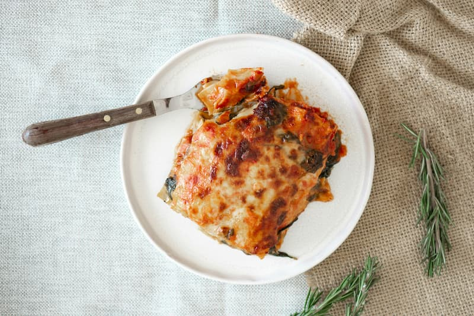

Lasagna: A Classic Italian Comfort Food

Description
Lasagna is a beloved Italian dish that features layers of wide, flat pasta sheets generously filled with savory goodness. Traditionally, it's a rich and satisfying casserole built with a hearty ragù (meat sauce), creamy béchamel sauce, melty cheeses, and sometimes vegetables.
This recipe will guide you through creating a perfect lasagna, from the simmering ragù to the bubbling, golden-brown top. Imagine cutting into a slice and revealing tender pasta layered with flavorful sauce, cheesy goodness stretching between the bites. It's a perfect dish for feeding a crowd, a cozy family dinner, or a celebratory meal.
Lasagna is not only delicious but also endlessly customizable. Feel free to explore variations with different cheeses, vegetables, or even a white sauce instead of the classic ragù. No matter your preference, this recipe provides a foundational lasagna experience you can build upon and make your own.
Ingredients
For the Ragù (Meat Sauce):
- Ground beef or Italian sausage (or a combination)
- Onion, diced
- Garlic cloves, minced
- Crushed tomatoes
- Tomato sauce
- Tomato paste
- Water
- Dried herbs (basil, oregano, thyme)
- Red wine (optional)
- Olive oil
- Salt and pepper
For the Béchamel Sauce (Optional):
- Butter
- All-purpose flour
- Milk
- Nutmeg
- Salt and pepper
For the Assembly:
- Lasagna noodles (no-cook or pre-cooked)
- Ricotta cheese
- Mozzarella cheese, shredded
- Parmesan cheese, shredded
- Fresh parsley (chopped, for garnish - optional)
Lasagna Steps
- Make the Ragù (Meat Sauce):
Heat olive oil in a large skillet over medium heat. Add ground meat and cook until browned, breaking it up with a spoon.
Add diced onion and cook until softened, about 5 minutes. Stir in minced garlic and cook for another minute.
Pour in crushed tomatoes, tomato sauce, and tomato paste. Add water to thin the sauce slightly, and season with dried herbs, salt, and pepper.
(Optional) For a richer flavor, deglaze the pan with red wine by scraping up any browned bits stuck to the bottom before adding the tomatoes.
Bring to a simmer, then reduce heat and cook for at least 30 minutes, or up to an hour, to allow the flavors to meld. Taste and adjust seasonings as needed.
- Make the Béchamel Sauce (Optional):
In a saucepan, melt butter over medium heat. Whisk in flour and cook for 1 minute, stirring constantly, to form a roux.
Slowly whisk in milk, a little at a time, until the sauce thickens and becomes smooth. Season with nutmeg, salt, and pepper. Set aside.
- Cook the Lasagna Noodles (if using non-cook variety):
Follow package instructions for pre-cooking no-cook lasagna noodles. This usually involves boiling water for a few minutes, then draining.
- Assemble the Lasagna:
Preheat oven to 375°F (190°C). Grease a 9x13 inch baking dish.
Spread a thin layer of ragù on the bottom of the dish. Top with a single layer of cooked lasagna noodles, making sure to cover the entire surface.
Dollop ricotta cheese evenly over the noodles, then sprinkle with shredded mozzarella cheese.
If using béchamel sauce, spread a thin layer over the ricotta.
Repeat the layering process, starting with ragù and ending with a generous layer of mozzarella cheese.
- Bake and Serve:
Cover the lasagna loosely with foil and bake for 30 minutes.
Remove foil and bake for an additional 15-20 minutes, or until the top is golden brown and bubbly.
Let the lasagna cool slightly before cutting into slices. Garnish with chopped fresh parsley (optional) and serve warm